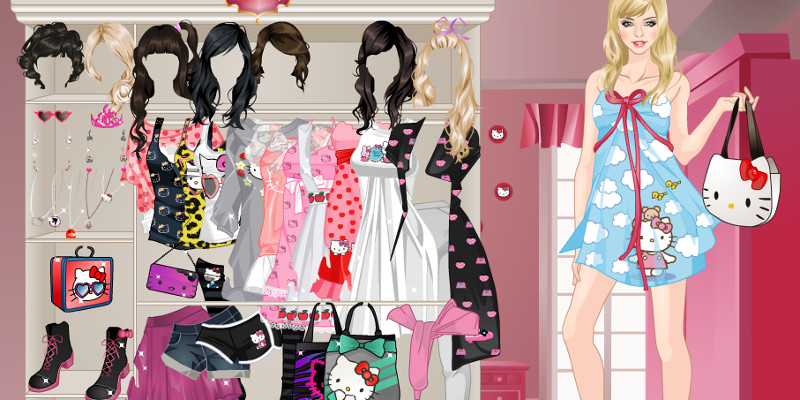
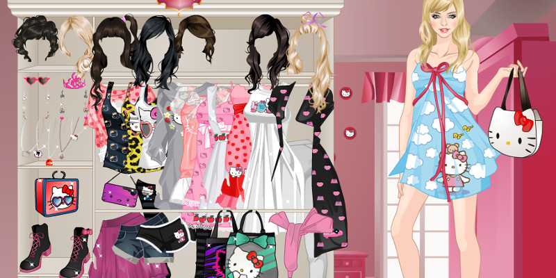

Projet de création :
J'ai créé il y a un an une marque d'upcycling avec deux amis.
L'upcycling c'est (selon wikipédia) "l'action de récupérer des matériaux ou des produits dont on n'a plus l'usage afin de les transformer en matériaux ou produits de qualité ou d'utilité supérieure"). Plus précisément, ce que nous faisons c'est récupérer des vêtements de seconde main pour les upcycler par la peinture et la couture. Nous avons déjà un site de vente, que j'aimerais recréer de manière plus originale, mais je ne vais pas me lancer là-dedans maintenant parce que je pense que ça demanderait plus de temps, et la collaboration de mes collègues.
J'ai un autre projet sur la base de cette marque : nos créations ne sont que des pièces uniques, et, une fois qu'elles trouvent un nouveau propriétaire, sont retirées des plateformes de vente en ligne. On n'en a donc plus de trace, à moins de les avoir posté sur un réseau social. Aussi notre travail a beaucoup évolué depuis la création du projet. Je voudrais donc créer une archive de toutes nos créations. Comme je l'ai dit dans le devoir 1, je suis beaucoup attirée par la tendance des sites brutalistes et j'aimerais donc créer un site dans cette veine.
J'ai créé une maquette rapide de mon idée pour que ce soit plus facile d'en parler :
L'upcycling c'est (selon wikipédia) "l'action de récupérer des matériaux ou des produits dont on n'a plus l'usage afin de les transformer en matériaux ou produits de qualité ou d'utilité supérieure"). Plus précisément, ce que nous faisons c'est récupérer des vêtements de seconde main pour les upcycler par la peinture et la couture. Nous avons déjà un site de vente, que j'aimerais recréer de manière plus originale, mais je ne vais pas me lancer là-dedans maintenant parce que je pense que ça demanderait plus de temps, et la collaboration de mes collègues.
J'ai un autre projet sur la base de cette marque : nos créations ne sont que des pièces uniques, et, une fois qu'elles trouvent un nouveau propriétaire, sont retirées des plateformes de vente en ligne. On n'en a donc plus de trace, à moins de les avoir posté sur un réseau social. Aussi notre travail a beaucoup évolué depuis la création du projet. Je voudrais donc créer une archive de toutes nos créations. Comme je l'ai dit dans le devoir 1, je suis beaucoup attirée par la tendance des sites brutalistes et j'aimerais donc créer un site dans cette veine.
J'ai créé une maquette rapide de mon idée pour que ce soit plus facile d'en parler :
Sur la maquette il n'y a qu'une dizaine de vêtements, car ce n'est qu'un brouillon pour présenter mon idée, mais il y en aurait beaucoup plus, je veux vraiment que ce soit une abondance, un fouillis, même si ça rend plus difficile la compréhension de l'internaute, comme c'est une esthétique qui me plaît.
J'aimerais que tous les vêtements soient jetés sur la page lorsqu'on la charge, les uns sur les autres. J'aime que ça évoque un tas de vêtements désordonné dans une friperie ou un marché aux puces, car c'est souvent là qu'on trouve notre matière première.
L'idée est qu'on puisse interagir avec ces vêtements : principalement cliquer dessus pour les placer au premier plan, et pouvoir les déplacer pour mieux les voir. L'utilisateur, en fouillant dans tous ces vêtements, pourrait s'amuser à composer des tenues, à la manière des jeux d'habillage sur internet visant les jeunes filles, auxquels je jouais quand j'étais plus jeune.
J'aimerais développer les fonctions, permettre peut-être de changer l'échelle et la rotation du vêtement, doube-cliquer pour le retourner (il y a souvent des visuels sur les deux faces du vêtement), pouvoir changer sa couleur… Aussi je souhaiterais que l'emplacement des vêtements soit généré aléatoirement au chargement de la page. Mais pour commencer je voudrais pouvoir rendre possible ce que j'ai expliqué plus haut, avant de voir si je peux aller plus loin.
J'aimerais que tous les vêtements soient jetés sur la page lorsqu'on la charge, les uns sur les autres. J'aime que ça évoque un tas de vêtements désordonné dans une friperie ou un marché aux puces, car c'est souvent là qu'on trouve notre matière première.
L'idée est qu'on puisse interagir avec ces vêtements : principalement cliquer dessus pour les placer au premier plan, et pouvoir les déplacer pour mieux les voir. L'utilisateur, en fouillant dans tous ces vêtements, pourrait s'amuser à composer des tenues, à la manière des jeux d'habillage sur internet visant les jeunes filles, auxquels je jouais quand j'étais plus jeune.
J'aimerais développer les fonctions, permettre peut-être de changer l'échelle et la rotation du vêtement, doube-cliquer pour le retourner (il y a souvent des visuels sur les deux faces du vêtement), pouvoir changer sa couleur… Aussi je souhaiterais que l'emplacement des vêtements soit généré aléatoirement au chargement de la page. Mais pour commencer je voudrais pouvoir rendre possible ce que j'ai expliqué plus haut, avant de voir si je peux aller plus loin.